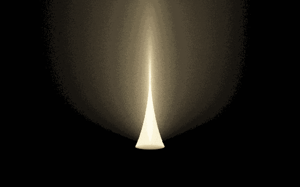

The refracted-disk instrument compares two ways of connecting exactly the same selected light-transport path:
point light -> glass entry -> glass exit -> one fog scatter -> pinhole camera
There is no medium scatter before the glass. The disk does not insert a second volume bounce. This matters: comparing it with the hourglass is a change of coordinates on the same path class, so a common-measure MIS comparison is meaningful. A conventional distance-distance photon plane usually releases lengths on two different flights. Carrying that construction through glass is a different experiment; its additional medium bounce is not required by the disk.
This is an additive native CPU research instrument in RefractedDiskLab.
It does not change PPIntegrator, the existing hourglass, or ordinary saved scenes.
The intended question is practical: can a complementary meridian chart help a
focusing caustic enough to justify its more expensive root solve?
Open and record it
Double-click Refracted-Disk.bat, or run Frontier-Studies.ps1 -Study refracted-disk in this checkout. Both open Optics & primitive laboratory → Glass: hourglass + disk in a separate session. Ordinary saved scene and window-layout files are preserved. Use Refracted-Disk.ps1 -PrepareOnly to prepare the session without opening a window.
Start with Focused transmission, Hourglass + disk MIS and 160 × 100. Drag on the image to orbit; stopping lets the film refine. Select each estimator with the same camera, medium and exposure. Then select Near-axis disk stress to reveal the meridian chart's poor direction. Index-one check removes refraction while retaining the declared path mask.
Pause accumulation retains the film; Restart film clears it. Camera, scene, estimator or medium changes restart accumulation. Display exposure and glow never change the linear samples. Recording view hides the setup column. Save PNG + linear film writes beauty.png, linear.pfm and the complete settings.txt into the isolated session's research-exports/refracted-disk-* directory. The PNG omits path annotations; record the application window to include them.
The path annotation is amber outside glass, violet inside glass and cyan on the camera leg. The view is framed around the scattering volume, so parts of the source prefix may lie outside the film. The browser schematic shows the whole construction. Only the selected research tab takes samples; a hidden tab does no background rendering.
The two charts
The source is (0, 0, -3). A unit-radius glass sphere is centered at the origin.
The emitted polar angle is psi, the azimuth is phi, and the positive flight
after leaving glass is r. Snell's law deterministically constructs the two
surface vertices and the outgoing ray. Write the scatter position as
X(psi, phi, r) = exit(psi, phi) + r direction(psi, phi).
The source only needs the angular cap which hits the sphere:
0 < psi < asin(1/3).
| Strategy | Random coordinate | Coordinates eliminated by the camera connection |
|---|---|---|
| Hourglass | Polar angle, sampled uniformly in its cosine | Azimuth and outgoing flight |
| Refracted disk | Uniform azimuth | Polar angle and outgoing flight |
| Balance mixture | Equal probability of either strategy | The chosen pair |
| Camera-distance reference | Distance inside the fog along the camera ray | Inverse source-to-point Snell connection |
The name disk describes its unrefracted limit. Through the sphere it is a
meridian ruled sheet with possible folds. Its outgoing rays can cross the axis.
It must therefore retain a signed radial coordinate; throwing away its
negative side would lose real post-focus paths. Incident azimuths phi and
phi + pi describe different light paths even when their planes coincide.
The common measure
Let d be the camera direction, and let subscripts denote derivatives of X.
The two constraint Jacobians are
J_H = abs(det[X_phi, X_r, d])
J_D = abs(det[X_psi, X_r, d]).
The corresponding sampling numerators are
A_H = sin(psi) / (1 - cos(psi_max)) * J_H
A_D = 1 / (2 pi) * J_D.
Both strategies induce branch densities A_i / abs(det[X_psi, X_phi, X_r])
on the same camera-path measure. Consequently the determinant cancels in the
balance weight. For a randomly chosen equal mixture, each valid root adds
I sin(psi) T_entry T_exit sigma_s phase Tr / (0.5 A_H + 0.5 A_D).
Solo modes use their own A_i instead. Fresnel transmissions are deterministic
throughput factors, not sampling probabilities. The two refractive radiance
index factors cancel between air-to-glass and glass-to-air. Internal reflection
branches are outside the selected contribution.
sourcePower in the settings is source radiant intensity in this experiment;
the UI's brightness scale is not a calibrated total-power claim. RGB is a fixed
warm emitter spectrum, with a single wavelength-independent index. This study
does not simulate chromatic dispersion.
Why a disk can complement an hourglass
The hourglass's camera crossing is a quadratic intersection of a revolved line. It is cheap, but a tangency to that sheet can produce a large weight. The disk first intersects the camera ray with its sampled meridian, then solves for the incident angle that bends a source ray through that point. These constructions have different Jacobians and different grazing configurations.
That difference motivates MIS; it does not guarantee a better image at equal CPU time. The disk's nonlinear inverse solve is more expensive. Near an axial camera its meridian-plane connection can become poorly conditioned. The Near axis scene deliberately exposes that case rather than claiming the new method universally replaces the hourglass.
What is integrated
The participating medium is a homogeneous box from (-2.1,-2.1,1.01) to
(2.1,2.1,5.1). It starts beyond the glass. Extinction is integrated over the
actual in-box lengths of the outgoing light and camera segments; outside the
box is vacuum. The single medium event uses normalized Henyey-Greenstein phase
and sigma_s. The camera segment is rejected if it crosses the glass, because
such a path would contain further specular events.
The Index matched acceptance scene sets the sphere's index to one but keeps this same camera mask and source cap. It tests the selected cone/disk domain, not an unrestricted scene with the sphere deleted. In that limit, the reference bypasses all refracted roots and directly evaluates point-source inverse-square irradiance along the camera ray.
The film contains only the chosen single-scatter contribution. It omits the direct glass surface picture, reflections, floors, other emitters and all higher-order medium scattering. A dark area may therefore be an omitted path class rather than a fully rendered black surface. Path overlays are representative topology guides; they are not claimed to be a particular sample in the film.
Root finding and limits
The hourglass keeps both valid quadratic intersections and reconstructs their azimuths with the signed radius. The disk uses an exact derivative of its one-dimensional connection residual to locate extrema, partitions the polar interval there, then bisects each sign-changing residual interval. Locating extrema first catches close root pairs that a plain residual sign grid misses.
The initial derivative scan is nevertheless finite. It is not interval arithmetic or a proof that every root was found. The disk and its MIS mixture are numerical experiments with possible root-omission bias. The root-partition control and refinement tests expose this limitation; the implementation does not describe the finite solver as rigorously unbiased. Exact axis, tangent, and tiny determinant degeneracies are guarded. Large finite contributions are not clamped away in the raw film.
The camera-distance reference is a different integration route: sample a point on the camera segment, independently construct the source connection with vector Snell refraction, and scan both incident meridians. Its Jacobian is computed by finite differences of that vector construction. It does not call either sheet solver. It still uses a finite inverse scan and is a convergence reference, not certified ground truth. Refining both methods matters when investigating a fold.
Reproducibility and display
Progressive accumulation stores a double-precision sum and an increasing sample count without a fixed pass budget. Changing scene or transport settings resets that sum. Pause and display exposure leave it intact. Tone mapping and optional glow are display operations; raw PFM export retains the linear transport film. The settings log and deterministic seed accompany native captures.
The test target checks analytic derivatives, both geometric limits, Fresnel range, common-measure integral agreement with the camera reference, connection residuals, partition refinement and deterministic split accumulation. The statistical comparisons report standard errors; they do not establish universal variance reduction or unbiasedness of finite root search.
Retained renderer outputs

The image isolates the fog contribution after glass; it does not include a beauty rendering of the sphere or the rest of the scene. The browser comparison offers all four methods at equal pass counts. The following measurements explain why this must not be read as an equal-time speedup.
First measurements
The native test passed 625,763 checks, including 83 illuminated connections in the partition-refinement sample and 25 known forward/inverse roundtrips. Those roundtrips include 16 negative-radius cases and nine multiple-root cases. An additional independent Python derivation audit checked the angular formulas against vector Snell refraction and the Jacobian identities over 12,000 draws.
The following single-ray probe uses 100,000 independent samples per method at
normalized film coordinate (0.57, 0.58). Reported uncertainty is one estimated
standard error. These are radiance estimates, not image similarity scores.
| View | Hourglass | Refracted disk | Balance mixture | Camera integral |
|---|---|---|---|---|
| Side view | 0.013770 ± 0.000273 | 0.013456 ± 0.000060 | 0.013390 ± 0.000081 | 0.013470 ± 0.000054 |
| Near axis | 0.60806 ± 0.00147 | 0.62611 ± 0.02499 | 0.60741 ± 0.00250 | 0.60514 ± 0.00486 |
| Index matched | 0.058567 ± 0.000270 | 0.058802 ± 0.000414 | 0.058788 ± 0.000153 | 0.058501 ± 0.000157 |
All regular-ray comparisons agree within 1.4 combined estimated standard errors. At the side-view probe the disk's per-sample variance is lower, but its root solve cost more. In that run the hourglass, disk and mixture took approximately 0.019, 0.536 and 0.280 seconds respectively. The variance-times-time proxy therefore still favored the hourglass. Near the axis the hourglass was better both in variance and cost. These are exploratory timings from one machine, not a stable benchmark or a claim about every pixel.
The favorable view is also captured as a genuine 512 × 320 progressive film with
256 passes, about 42 million jittered pixel samples. Its maximum reconstructed
connection residual was below 2.5e-10. Display glow is optional, and a linear
PFM accompanies the display PNG.
An eight-film comparison uses the same 256 × 160 resolution and 96 passes for all four methods in both views. Side-view chart means span 0.01119–0.01135, with the camera reference at 0.01127. Near-axis chart means span 0.15225–0.15252, with the reference at 0.15375. The linear raw films, display images and capture settings are retained; the displayed comparisons use the same exposure. Film timings from that concurrent capture run are illustrative only.
Exact axis-crossing rays require special care: they lie on a meridian chart degeneracy, and the ideal point-source spherical caustic can produce singular point-sampled radiance and very heavy tails. In the index-matched limit, a generic sampled meridian has no support for that exact isolated camera ray. The hourglass keeps coverage in the mixture. Such a ray is a useful failure diagnostic, not a conventional finite-variance reference comparison. Production of the film jitters the camera sample across the pixel, integrating finite pixel area instead of repeatedly evaluating its exact singular center.
The outcome is useful even without a new winner: the disk is a valid complementary construction, while the hourglass remains the more practical default for these first scenes. The comparison supplies a concrete reason, and leaves room for emitter layouts or camera views that favor the other chart.
Relation to the existing implementation
The construction follows the established chain and branch measure in
docs/hourglass/FLAVOURS.md and docs/hourglass/hg_mis_spec_full.txt. The existing
production strategy 20 provides the hourglass's physical and geometric
reference. This instrument independently expresses the one-sphere angular
formulas in double precision, instead of modifying or copying its multi-link
production machinery.
The meridian member was already identified as the missing 20-phi chart in
FLAVOURS.md. What is new here is the native comparison, numerical disk solve,
common-measure mixture, and recordable failure scene. This is a project research
addition, not a claim that meridian sampling or MIS itself is new to rendering.
An area-light or UT/VT/oblique plane through glass remains a separate follow-up. It needs its own sampled emitter coordinates, endpoint constraints and density ledger before it belongs in the same MIS table. A compelling schematic alone does not supply those missing probabilities.